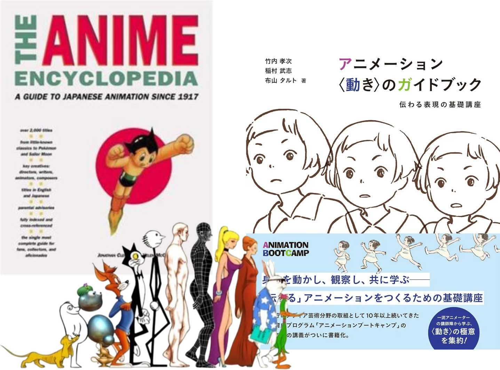

Animação é uma técnica que simula movimento através de sequências de imagens. Quando vemos imagens seguidas uma da outra elas se mantêm por uma fração de segundo em nossas retinas fazendo com que nosso cérebro as interprete como um único movimento. O padrão cinematográfico para filmagem são 24 frames por segundo, ou seja, em um segundo aparecem 24 imagens consecutivas em tela, esse conceito se estende para animação.
